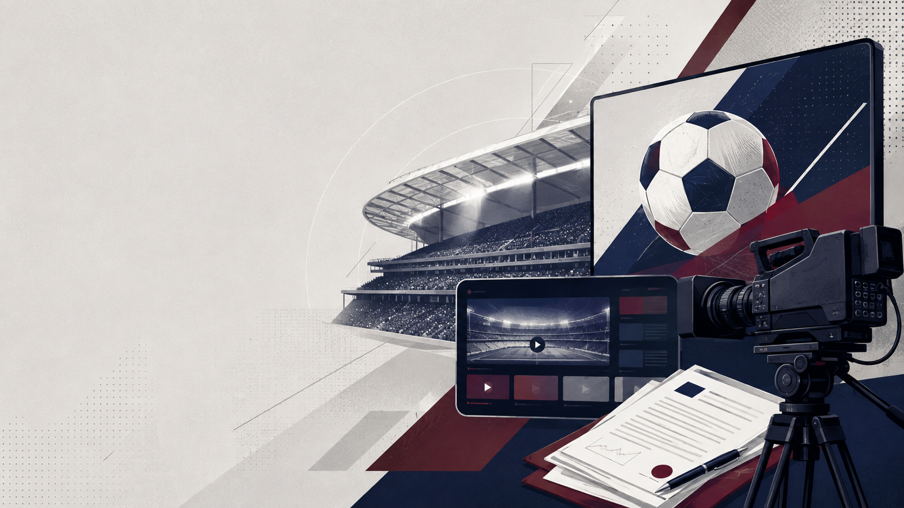

NEWS ENGLISH · SEPTEMBER 7, 2026
Streaming platforms, bundled language rights, and a high-stakes US media auction.
WARM-UP
OVERVIEW
PART 1 · READ
Several premier entertainment giants are actively preparing to challenge Fox for upcoming World Cup broadcasting rights in the American market. Major media enterprises like Netflix, Disney, and YouTube are showing immense interest in securing the next two tournaments. Preliminary discussions will officially kick off shortly, and the total value of these packages could comfortably top two billion dollars.
PART 1 · AT A GLANCE
PART 2 · READ
Football's governing body FIFA currently intends to combine the English and Spanish language rights into one single package. This strategic consolidation primarily aims to eliminate existing distribution tensions while heavily driving up bids from competing digital platforms. Consequently, traditional network rivals will likely back out of the intense competition due to these sky-rocketing acquisition costs.
PART 2 · AT A GLANCE
PART 3 · READ
Prominent streaming services particularly view these highly coveted World Cup matches as a fantastic way to permanently lock-in subscribers. Although future tournaments will completely leave American time zones, current record-breaking viewership figures give sellers substantial financial leverage during negotiations. Therefore, corporate executives are already budgeting massive amounts to successfully capitalize on the sport's burgeoning popularity.
PART 3 · AT A GLANCE
REVIEW
SPEAK & APPLY
FULL LISTENING · READ TOGETHER
SOURCES